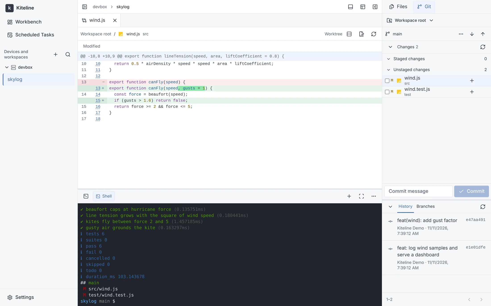
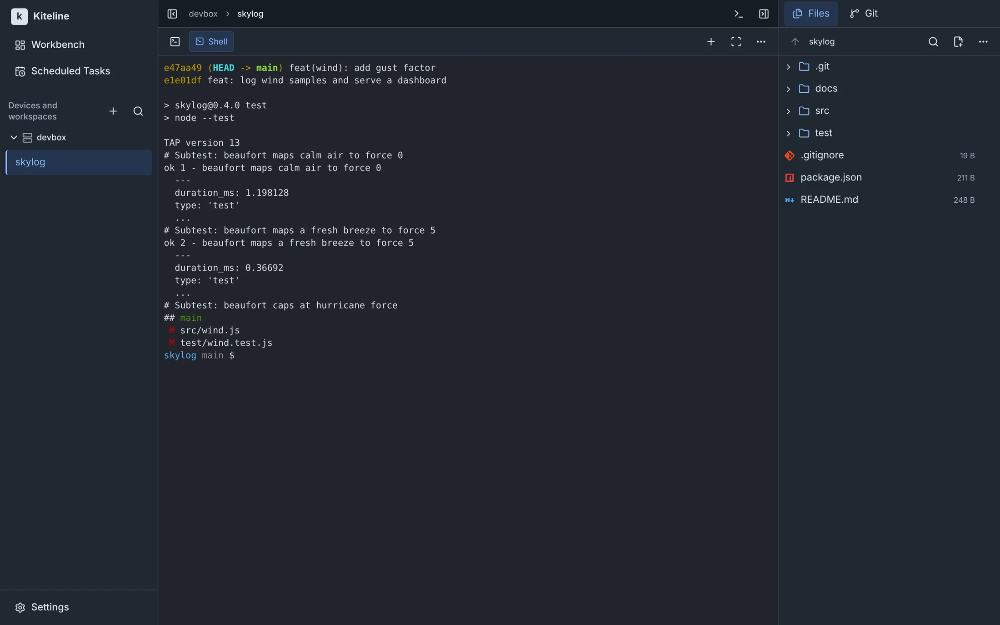
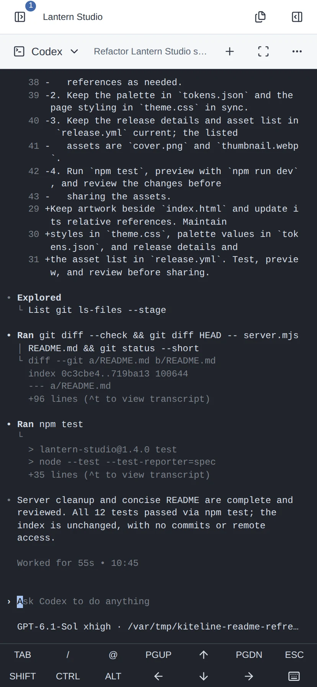
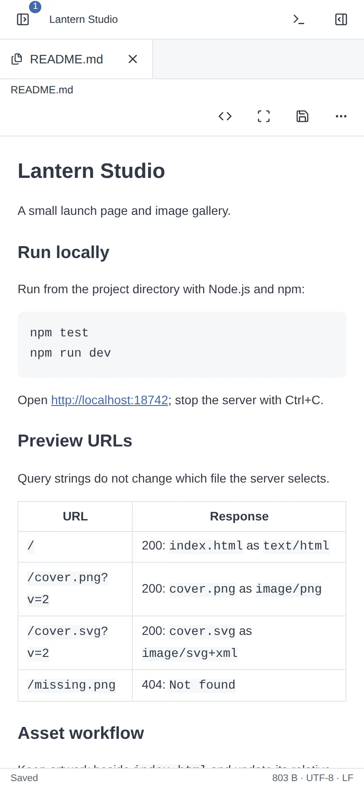
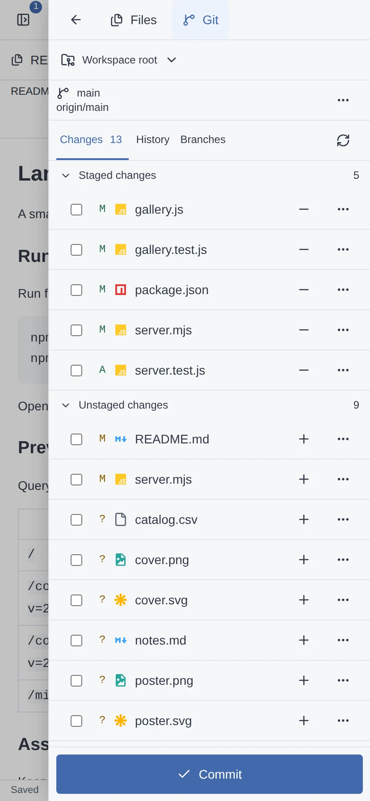

多设备与工作区
接入 Linux、Windows 和 macOS 设备，按项目切换工作区。
你已经在用的 CLI，原样运行
终端、文件和 Git 并排放在一起。看 agent 干活，顺手检查它改了什么，都不用离开这个页面。



换一台电脑或拿起手机，会话继续运行。终端需要你时会通知你，例行的事交给定时任务。
接入 Linux、Windows 和 macOS 设备，按项目切换工作区。
程序发出的通知与等待报告汇总在工作区列表，点击来源回到对应终端。
按 cron 计划在设备上运行脚本或 agent，并保留运行记录；agent 也可以自行创建任务。
手机布局是完整的工作台：带按键工具栏的终端、文件预览和 Git 面板都在。



浏览器只和你的 server 通信；设备上的 agent 主动向外连接 server，设备不需要开放入站端口。
一台装了 Docker 的 Linux 主机即可运行 server。
设备上需要 Git 2.23+、所需的 Shell，以及已登录的 coding CLI。
登录者拥有 agent 运行账户的文件和命令权限。